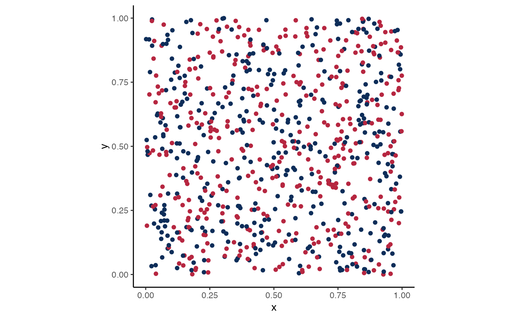

A layer that can be added to ggplot2 plots to change the colour aesthetic
to interpolate values from the colours used in the CGEM logo.
Usage
scale_colour_cgem_d(
aesthetics = "colour",
scale_name = "CGEM_Colours",
palette = cgem_colours_palette_func_gen(),
name = ggplot2::waiver(),
breaks = ggplot2::waiver(),
labels = ggplot2::waiver(),
limits = NULL,
expand = ggplot2::waiver(),
na.translate = TRUE,
na.value = cruk_grey(),
drop = TRUE,
guide = "legend",
position = "left",
super = ggplot2::ScaleDiscrete
)Arguments
- aesthetics
The names of the aesthetics that this scale works with.
- scale_name
The name of the scale that should be used for error messages associated with this scale.
- palette
A palette function that when called with a single integer argument (the number of levels in the scale) returns the values that they should take.
- name
The name of the scale. Used as the axis or legend title. If
waiver(), the default, the name of the scale is taken from the first mapping used for that aesthetic. If NULL, the legend title will be omitted.- breaks
Passed to
ggplot2::discrete_scale().- labels
Passed to
ggplot2::discrete_scale().- limits
Passed to
ggplot2::discrete_scale().- expand
Passed to
ggplot2::discrete_scale().- na.translate
Setting to
FALSEwill removeNAvalues from the colour theme.- na.value
The colour of
NAvalues- drop
Should unused factor levels be omitted from the scale?
- guide
A function used to create a guide or its name.
- position
The position of the scale.
- super
The super class to use for the constructed scale.
See also
Other Layer:
scale_colour_cgem_c(),
scale_colour_cruk_c(),
scale_colour_cruk_d(),
scale_colour_ukri_c(),
scale_colour_ukri_d(),
scale_fill_cgem_c(),
scale_fill_cgem_d(),
scale_fill_cruk_c(),
scale_fill_cruk_d(),
scale_fill_ukri_c(),
scale_fill_ukri_d()
Examples
library(ggplot2)
ggplot(
data.frame(
x = runif(800),
y = runif(800),
col = sample(LETTERS[1:2], 800, replace = TRUE)
)
) +
aes(x = x, y = y, colour = col) +
geom_point() + theme_classic() +
guides(colour = "none") +
coord_equal() +
scale_colour_cgem_d()
